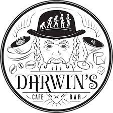

Getraenke
- aperol spritz
Prosecco.
Aperol.
Mineralwasser.
- daiquiri
Rum.
Limettensaft.
Zucker.
- gin/rum fizz
Gin / Rum.
Zitrone.
Zucker.
Mineralwasser.
- gin/rum/whiskey sour
Gin/Rum oder Whiskey.
Zitrone.
Zucker.
Wahlweise mit Eiweiss
- gin tonic
Gin.
Tonic.
- mai tai
Brauner Rum.
Cointreau.
Limette.
Zucker.
Mandel.
- scotch.
Ardberg Supernova SN2010.
Bowmore Enigma 12y.
Clynelish 14y.
powered by
